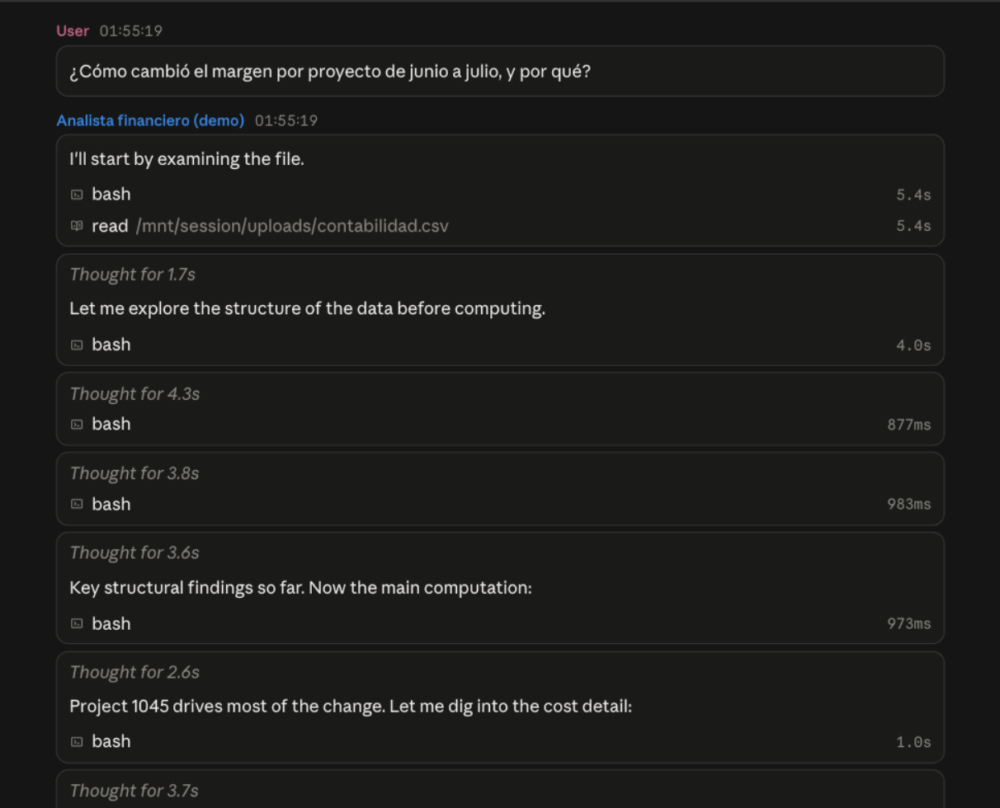
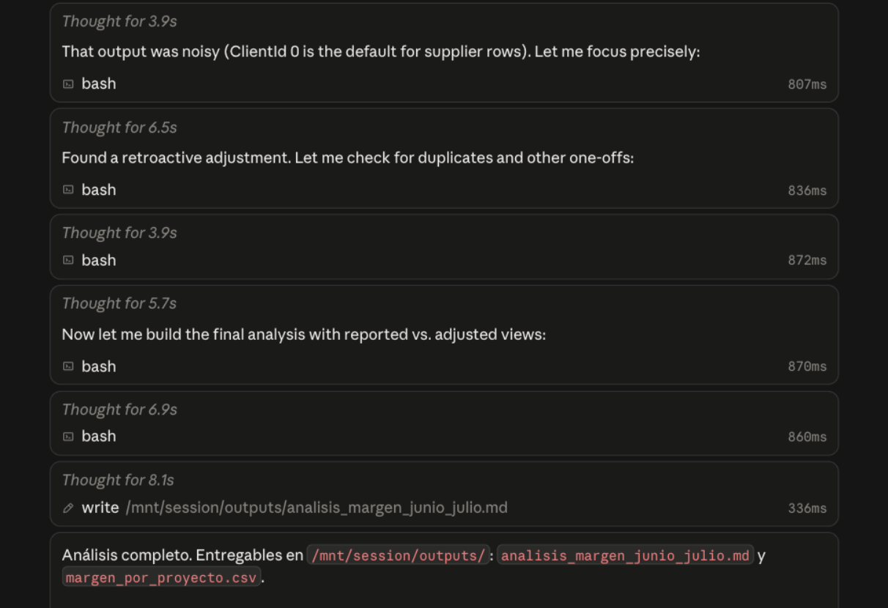
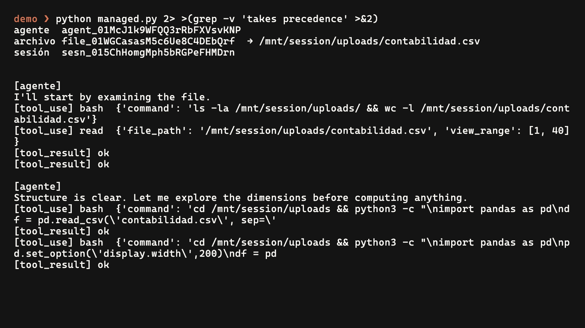
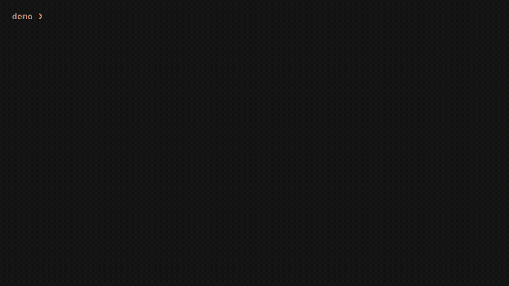
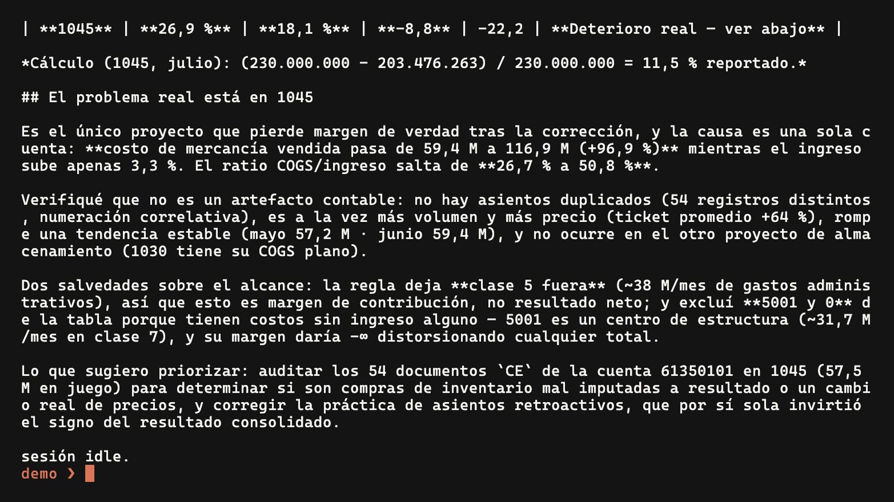
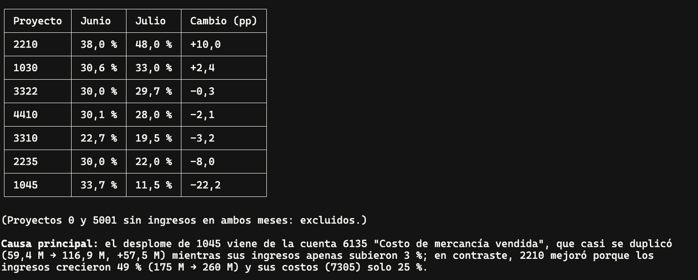
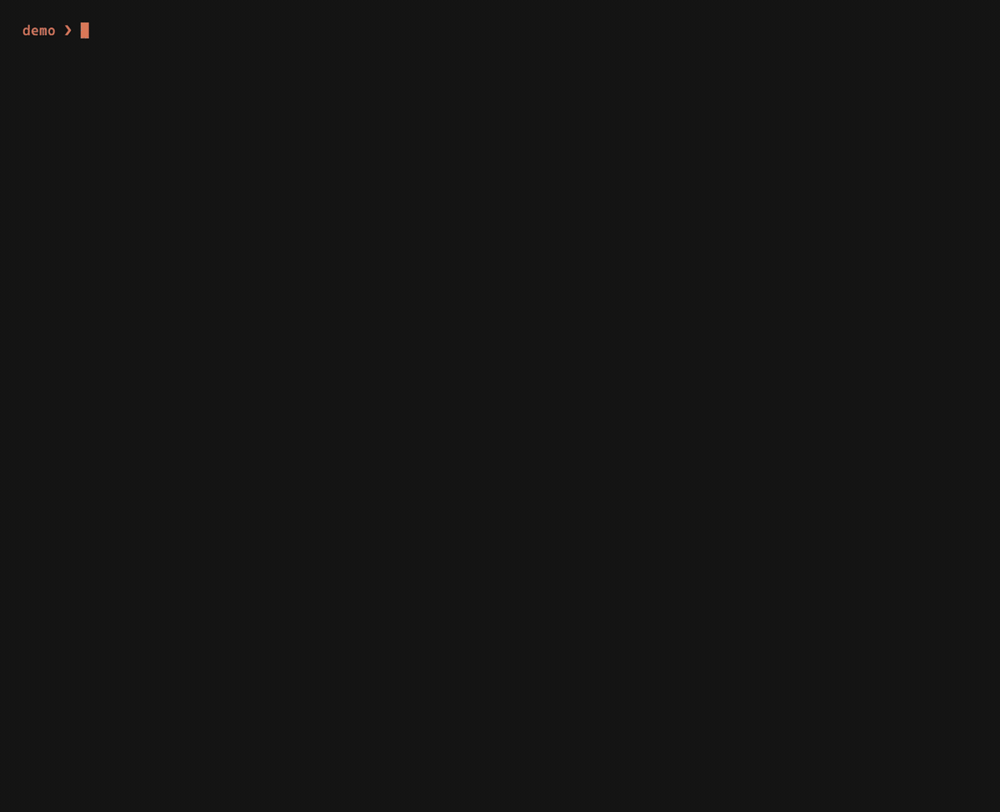

Construye tu primer agente de AI con Claude
Del loop básico a un agente que analiza datos
Claude Community Ambassador · Sr AI Research Engineer, Mercado Libre
En una hora podrás
- 1Dibujar el loop de un agente.
- 2Explicar sus cinco piezas.
- 3Configurar un agente con system prompt, tools y skills.
Dos capacidades convierten el modelo en agente
Cada sistema responde distinto
¿Cómo cambió el margen por proyecto de junio a julio, y por qué?
Chatbot
Usa solo su contexto.
Workflow
Sigue pasos definidos.
Agente
Elige los pasos.
El agente repite hasta poder responder
mientras no termine:
respuesta = modelo(contexto)
si pide una tool:
contexto += ejecutar(tool)
si no:
entregar(respuesta)Mira cada vuelta del loop
pregunta → tool → resultado → siguiente decisión
¿Cómo cambió el margen por proyecto de junio a julio, y por qué?


Cinco piezas sostienen el loop
modelo decide · tools actúan · contexto reúne lo que el modelo sabe · loop repite · parada termina
tool_use · tool_result · turno · stop_reason
Dibuja el loop de un agente
60 segundos.
En papel. Compáralo con quien tienes al lado.
Ancla 1
Un agente es un modelo que usa tools dentro de un loop.
Cinco piezas describen el agente; tú configuras tres
Hoy el modelo ya está elegido: Claude Opus 5 · Claude Sonnet 5.
El system prompt define el trabajo
Objetivo, reglas y formato de salida.
Objetivo: analizar el margen por proyecto. Reglas: ingresos en cuentas 4; costos en 6 y 7. Salida: cifra, cálculo y causa.
v1 responde con método. Sin datos, sin cifra.
Una tool debe ser fácil de elegir
Nombre específico. Descripción concreta. Resultado pequeño y útil.
Objetivo: analizar el margen por proyecto. Reglas: ingresos en cuentas 4; costos en 6 y 7. Salida: cifra, cálculo y causa. + tool calcular_margen(proyecto, mes) lee el CSV, suma 4 y 6+7, devuelve el margen
v2 da la cifra y el cálculo.
Una skill enseña un procedimiento reutilizable
Cuándo usarla, pasos, reglas.
Objetivo · Reglas · Salida + tool calcular_margen(proyecto, mes) + .claude/skills/margen/SKILL.md ajustes retroactivos, nómina, ausencias
v3 da cifra, cálculo y causa.
Anthropic corre el loop con tus palancas
la misma pregunta, el mismo CSV
agents.create(system, tools)
→ sessions.create(csv, pregunta) → respuesta



Ancla 2
Tú defines tres palancas: system prompt, tools y skills.
Claude Code ejecuta el loop en tu computador
Claude Code analiza el mismo CSV
tool calls visibles → cifra, código y causa
¿Cómo cambió el margen por proyecto de junio a julio, y por qué? Muestra el código.


En Claude Code, cada palanca tiene un lugar
- 1system prompt →
CLAUDE.md(contexto del proyecto) ·--append-system-prompt - 2tools → integradas + MCP
- 3skills →
.claude/skills/<nombre>/SKILL.md
Agent SDK integra el agente en tu producto
Tu aplicación inicia el loop, define sus tools y recibe cada mensaje.
query(prompt, options=ClaudeAgentOptions(
system_prompt=..., mcp_servers=..., skills="all"))Managed Agents opera el runtime por API
Tú configuras system prompt, tools y skills. Anthropic ejecuta las sesiones y el sandbox.
client.beta.agents.create(name=..., model="claude-opus-5",
system=..., tools=[{"type": "agent_toolset_20260401"}])toolset: bash, archivos, web, MCP · beta
Elige dónde corre el agente
| Claude Code | Agent SDK | Managed Agents | |
|---|---|---|---|
| corre en | tu computador | tu aplicación | Anthropic |
| system prompt | CLAUDE.md+ --append-system-prompt | system_prompt= | system= |
| tools | integradas + MCP | @tool + MCP | toolset + MCP |
| skills | .claude/skills/ | skills= | skills adjuntas |
Ancla 3
El loop se conserva. Cambia quién opera su ejecución.
Claude Community Bogotá
Ya puedes construir tu agente
Construye un recorrido completo. Luego mejora una palanca.
Gracias a Quick por el espacio.
Claude Code Colombiachat.whatsapp.com/LC3ZdlN8t6GJucYWKN5WkU